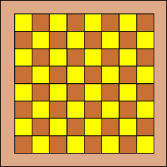
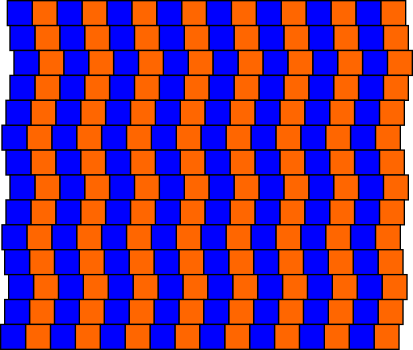
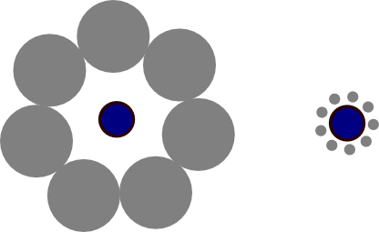
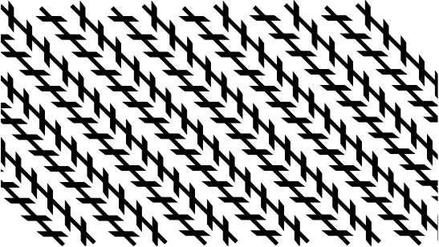
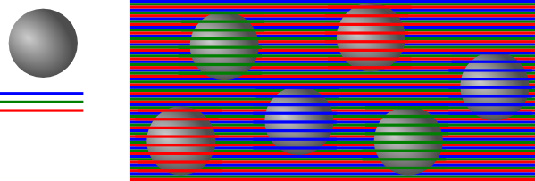

Зрительные иллюзии - это когда мы смотрим на картинку и видим не совсем то, что на ней изображено. Задания можно делать с помощью модуля turtle (черепашья графика), tkinter (векторная графика) или PILL (растровая графика).
A. Шахматная доска.
Пока никакой иллюзии нет: рисуем шахматную доску и видим шахматную доску :) Напишите программу так, чтобы можно было менять число клеток в ширину и в высоту (или число пар клеток). Это понадобится для следующей задачи.

B. Горизонтальные линии - не параллельны?
Если сделать клетчатые полоски подлиннее и немного сдвинуть их друг относительно друга, появляется иллюзия, что горизонтальные линии не параллельны. Поэкспериментируйте с параметрами (цвета. толщина линии, размер сдвига), чтобы добиться наилучшего эффекта.

С. Круги - не одинаковы?
В центре каждой картинки - одинаковые кпуги. Вокруг, в углах правильного многоугольника, расположены большие или маленькие круги. В зависимости от их размера центральные круги кажутся больше или меньше. Картинки удобней всего рисовать с помощью черепашек (есть функция circle(), которая рисует круг заданного размера с черепашкой в центре). Поэкспериментируйте с параметрами картинки (размеры кругов, расстояния, цвета, количество кругов), чтобы добиться наилучшего эффекта.

D. Наклонные линии - не параллельны?
Все наклонные линии идут под углом 45 градусов. Важно, что торцы засечек-параллелограммов параллельны линиям. Поэкспериментируйте с параметрами картинки (расстояния между линиями, размер и количество засечек), чтобы добиться наилучшего эффекта. Если рисовать картинку с помощью черепашек, то имеет смысл сначала написать функцию, рисующую одну засечку.

Е. Цветовая иллюзия. Круги - разноцветные?
Фон состоит из тонких полосок красного, зелёного и синего цветов. Поверх фона располагаются одинаковые серые кружочки (в PILL можно написать функцию, которая раскрасит их радиальным градиентом, для tkinter и turtle проще будет оставить круги просто серыми). Поверх каждого круга рисуются полоски только одного цвета: красного, зелёного или синего. Кажущийся цвет круга будет зависеть от цвета нарисованных поверх него полосок.
